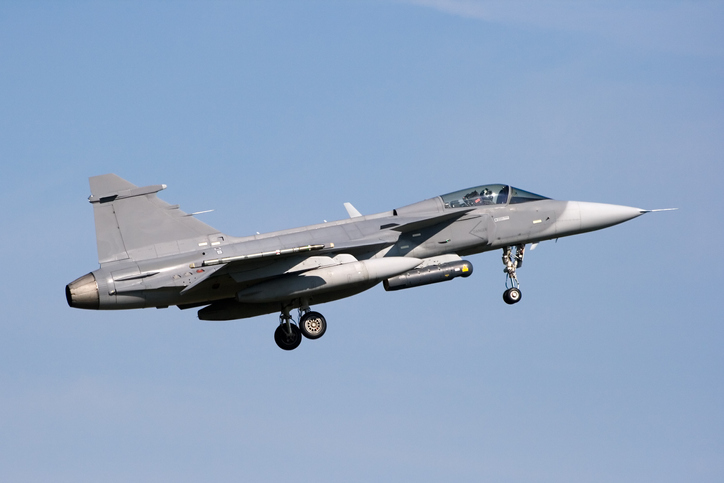
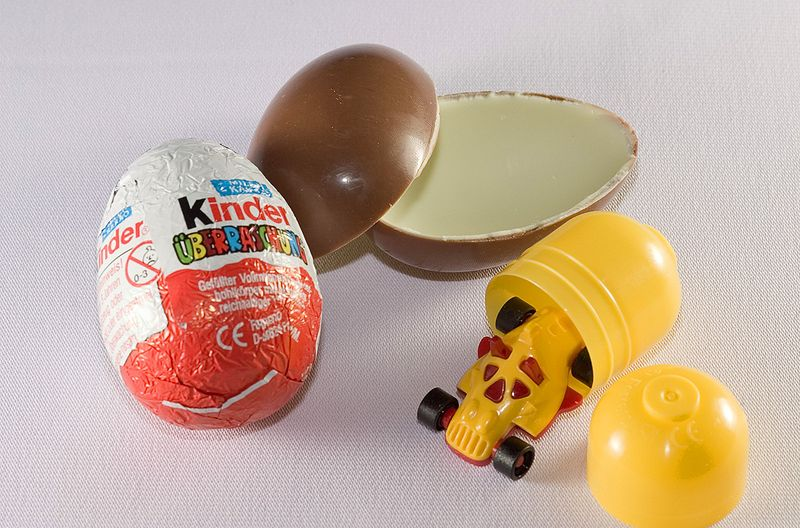
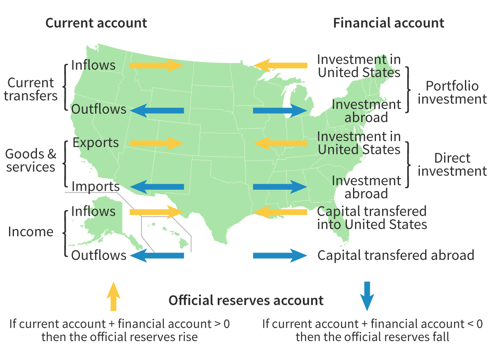

Arguments for Trade Protection
Protection of infant (sunrise) industries
An infant industry is newly established and too small to benefit from economies of scale. Brazil has used protectionism since the 1990s, imposing trade barriers and subsidies to shield its industries from foreign competition. The pharmaceutical industry often needs protection due to long drug development timelines and costly clinical trials. R&D costs can range from USD 500 million to 2 billion per drug.
For example, Gilead Sciences' Sovaldi — a hepatitis C drug — cost USD 84,000 for a 12-week course, reflecting the high price of innovation. Governments may use trade protection to support these industries, foster innovation, and strengthen domestic markets. Gilead Sciences faces high upfront R&D costs, so the first pill is expensive. As production increases from Q1 to Q2, fixed costs spread across more output, lowering average costs from C1 to C2. This allows Gilead to cut prices for consumers. Infant pharmaceutical industries struggle to compete with larger foreign firms and can't initially benefit from economies of scale. To support them, governments may use protectionist measures like administrative barriers — such as requiring extra testing or clinical trials — to slow or block imports. Agencies like the FDA in the USA oversee these approvals.
National security
Some goods and services must be produced domestically for national security. For example, the EU argues that guaranteed access to food is essential for security, so it subsidises its agricultural industry to ensure food is grown on European soil. Another key aspect of national security is the defence industry. Would we want other countries producing all the equipment needed for our country's armed forces?
Maintenance of health and safety
Governments must protect their citizens by enforcing health and safety laws. Products that fail to meet safety standards are banned from import. For example, the US and Chile prohibit the Kinder Surprise due to choking hazards. In the EU, all food products must list ingredients, so non-compliant imports are blocked. Such regulations ensure consumer safety but also limit trade.
Environmental standard
Countries may define clear production standards for goods in order to protect the environment. In 2021, the European Union banned single-use plastic items such as straws, cutlery, plates, and cotton buds. These disposable plastics often end up in rivers and oceans, contributing to massive marine pollution and endangering wildlife. The ban aims to reduce plastic waste, protect ecosystems, and promote sustainable alternatives.
Anti-dumping
Dumping refers to firms exporting their goods at a price below production cost. It is a type of predatory pricing behaviour. An importer may sell or ‘dump’ goods abroad in order to gain a foothold in a new market. This is deemed illegal by the WTO, and countries may complain if they feel that foreign nations are behaving in a predatory and anti-competitive manner within its borders. A country may respond with its own protectionist measures to protect its domestic industries.
Case Study
European Union and Brazil: Sugar Subsidies and Dumping
The European Union (EU) and Brazil have clashed over allegations of sugar dumping. Brazil, the world’s largest sugar producer,
accused the EU of selling sugar at artificially low prices in international markets, undercutting Brazilian producers.
In response, Brazil filed a complaint with the World Trade Organization (WTO), arguing that EU subsidies were enabling
sugar exports at below-market prices.
Was the EU dumping sugar onto the global market?
According to the WTO, dumping occurs when exports are sold below their ‘normal value’ and cause material injury to domestic industries.
However, defining ‘normal value’ is complex and depends on how a country calculates production costs and market conditions.
In this case, EU sugar producers benefited from government subsidies under the Common Agricultural Policy (CAP).
These subsidies allowed EU farmers to sell sugar at lower prices in global markets. Brazil argued that, without subsidies,
EU sugar prices would be significantly higher, making the artificially low export prices a form of dumping.
EU sugar exports increased as subsidies kept prices low, impacting global markets.
The EU countered that its sugar exports were not being sold below domestic prices. It maintained that subsidies did not necessarily mean dumping,
as they were designed to support domestic farmers rather than distort international markets.
However, Brazil argued that the EU’s domestic prices were not reflective of ‘normal value’ due to the artificial support given to farmers.
Brazil claimed that without subsidies, EU sugar production would not be competitive, and thus, the home market price was not a fair benchmark.
The dispute was resolved when the WTO ruled in favor of Brazil, forcing the EU to reform its sugar subsidy program and limit export volumes.
Questions to Consider
1. Do you think the EU was guilty of dumping sugar into global markets? Explain.
2. Do you think reducing subsidies was the best solution to the dispute?
3. What are the advantages and disadvantages of limiting subsidies?
4. Who are the winners and losers when subsidies are reduced?
For further reading, explore the WTO agreements on subsidies and countervailing measures.
Sample Answer
1.
Yes. EU subsidies under the Common Agricultural Policy (CAP) lowered production costs, allowing sugar exports at below-market prices.
The WTO ruled in favor of Brazil, confirming the subsidies distorted competition and constituted dumping.
2.
Yes, but with caveats. It restored fair competition and aligned with WTO rules but hurt EU farmers.
A phased reduction with transition support would have been more balanced.
3.
Advantages:
Limiting subsidies promotes fair global competition by preventing market distortions caused by artificially low prices.
It encourages efficiency, pushing producers to innovate and improve productivity rather than relying on government support.
Additionally, it reduces government spending, easing the financial burden on taxpayers.
Disadvantages:
Cutting subsidies can harm EU farmers who depend on them to remain competitive, potentially leading to job losses and farm closures.
It may also cause market instability, with sudden price fluctuations affecting both producers and consumers.
Furthermore, reduced domestic production could increase reliance on sugar imports, making the EU more vulnerable to supply chain disruptions.
4.
Winners:
Brazil and other sugar-exporting countries benefit from reduced competition, allowing them to sell at fair market prices and gain a larger share of global trade.
Consumers in developing markets also gain better access to sugar at prices unaffected by EU subsidies.
Additionally, taxpayers in the EU benefit from lower government spending on agricultural subsidies.
Losers:
EU sugar farmers face higher production costs without subsidies, making it harder to compete, which could lead to business closures and job losses. Industries that rely on cheap sugar, such as confectionery and beverage manufacturers, may also suffer from increased costs. Lastly, EU consumers could see sugar prices rise if domestic production declines and imports become more expensive.
Unfair competition
Countries may impose trade protection to counter intellectual property theft and support domestic industries. For example, U.S. semiconductor firms invest heavily in R&D, but Chinese companies have been accused of reverse engineering their technology to produce cheaper alternatives. U.S. firms face high upfront costs, making initial production expensive. As output increases from Q1 to Q2, fixed costs spread, reducing average costs from C1 to C2, allowing for lower prices.
However, emerging domestic chipmakers struggle to compete with larger foreign firms that already benefit from economies of scale. To protect them, governments may implement trade barriers like export controls, restricting technology transfers to foreign competitors. Agencies like the U.S. Department of Commerce oversee these restrictions to safeguard national industries and intellectual property.
Balance-of-payments correction
The balance of payments is the record of transactions in trade, capital and financial flows between a country and the rest of the world. The total balance of payments must always be equal to zero. Sometimes, extreme trade flows create challenges for the balance of payments. A trade deficit, where imports outweigh exports, causes an outflow of funds. One solution for a trade deficit is to use protectionist policies to slow or stop imports. By restricting trade, the country can rebuild its industry and try to reduce the trade deficit, preventing an outflow of funds.
Protection of jobs
Governments use protectionist policies to safeguard jobs in struggling industries. When domestic sectors lose their competitive edge, tariffs or quotas prevent mass unemployment. The European Union, for example, imposes tariffs on imported steel to support local manufacturers. However, such measures are costly. EU taxpayers pay over EUR 100,000 annually to sustain a single steel job, while workers earn far less. This raises concerns about long-term sustainability.
Questions to consider
1. How do international trade policies and foreign competition impact Ford’s position in these negotiations?
2. How can companies like Ford prepare their workforce for future industry shifts?
Sources of government revenue
Governments generate revenue through various sources, including taxes, tariffs, and natural resource royalties. In many economically least developed countries (ELDCs), limited income and corporate tax structures push governments to rely heavily on tariffs. For example, import duties make up a significant portion of government earnings in nations without broad tax bases. This approach provides essential funding for public services but can also increase consumer costs and discourage trade. Striking a balance between tariff revenue and economic growth remains a challenge for policymakers.
Activity
The figure below shows the average tariff rate levied by selected countries. The higher the number/darker the blue, the more tariffs are levied in that specific country
Question: What do you notice about the countries that impose the highest tariffs?
Hint: Look for the level of development within the country
Answer
When you look at the countries that have a higher average tariff rate levied, they are mostly all developing countries such as African countries like Algeria and Mali. This is because limited income and corporate tax structures push governments to rely heavily on tariffs.
Economically least developed country (ELDC) diversification
Economically least developed countries (ELDCs) may choose to protect key industries in the short run. ELDCs, such as Sudan or Somalia, do not have a well-developed industrial base. This refers to the broad production capabilities of a nation in key industries. For example, if a country can produce steel, it has the inputs to manufacture bridges, cars, and machinery. A strong chemical industry enables the production of plastics, fertilizers, and pesticides, boosting manufacturing output. By protecting key industries temporarily, ELDCs allow domestic sectors to grow without immediate foreign competition.
IB-style Question!
Using real-world examples, evaluate the argument that the imposition of tariffs is the most effective protectionist measure. [15 marks]
Sample Answer
Definition
Protectionism: Government actions and policies that restrict or restrain international trade, often with the intention of shielding domestic industries from foreign competition.
Tariff: A tax levied on imported goods, which increases the cost of these goods in the domestic market.
Explanation/Economic Theory
Protectionism is introduced when a government aims to limit imports and support domestic producers. Tariffs are one of the most common forms of protectionism.
When a tariff is imposed on imports:
- The price of the imported good in the domestic market increases by the amount of the tariff, reducing the quantity demanded of imports.
- Domestic firms supplying the same good can expand production as they become relatively cheaper compared to imports.
- Consumer surplus decreases due to higher prices and lower consumption of the good.
- Government earns tax revenue from the tariff.
- Foreign producers are disadvantaged because their goods become more expensive in the domestic market.
Key reasons for imposing tariffs include:
- Protecting infant industries that are not yet competitive on a global scale.
- Safeguarding strategic industries vital to national security.
- Maintaining domestic employment by shielding local firms from sudden import competition.
Potential drawbacks of tariffs:
- Retaliation from trading partners can trigger a trade war.
- Inefficiency in domestic industries if they rely on prolonged protection.
- Possible misallocation of resources if tariffs prop up industries that do not have a comparative advantage.
- Other protectionist measures (quotas, subsidies, administrative barriers) can achieve similar goals, but tariffs often have a direct impact on government revenue and clear price effects on imports.
Diagram

Evaluation
Short-run and long-run impacts:
- In the short run, tariffs can protect domestic employment and industries, boosting producer surplus and providing immediate government revenue.
- In the long run, consumers face higher prices and reduced variety, while domestic industries might become less efficient due to less competition. Retaliatory measures from foreign nations can further reduce export competitiveness and harm overall economic growth.
Real-world examples
- The United States imposed tariffs on steel and aluminum imports in 2018. Domestic steel producers benefited through higher prices, but many US manufacturers faced increased input costs, leading to higher prices for consumers and potential job losses in downstream industries.
- The European Union’s Common External Tariff on certain agricultural products raises the price of imports from outside the EU, aiding farmers within the EU but also risking trade disputes, particularly with developing countries that depend on agricultural exports.
- Alternative protectionist measures, such as quotas or subsidies, can sometimes be more targeted. For instance, Japan has historically used non-tariff barriers, like stringent quality checks, which effectively reduced imports of certain products without directly introducing a tariff.
- Tariffs can be viewed as effective in generating government revenue quickly and protecting specific sectors. However, significant retaliation (such as China’s counter-tariffs on US soybeans in 2018) can harm domestic exporters, complicate trade negotiations, and reduce the net benefits of tariffs.
Conclusion
- Tariffs can be an effective short-term tool for protecting domestic industries and generating government revenue.
- Other measures (quotas, subsidies, administrative barriers) may be more precise, limiting distortions in some cases.
- Tariffs might not always be the most effective policy when considering negative impacts on consumers, potential inefficiencies in domestic production, and international retaliations.
Credit: Ryan Yuan & RevisionDojo